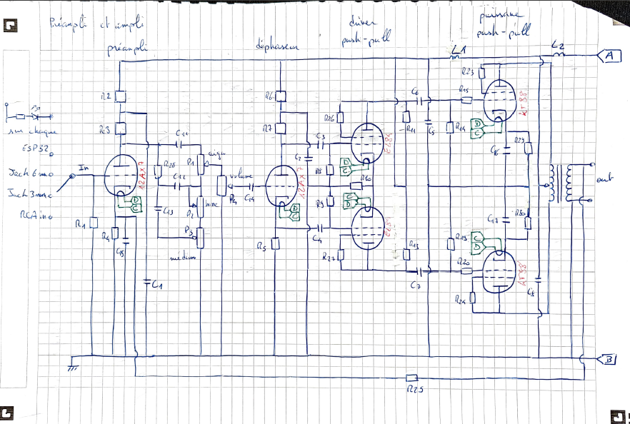
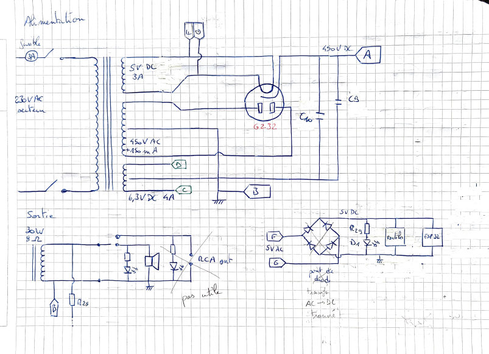
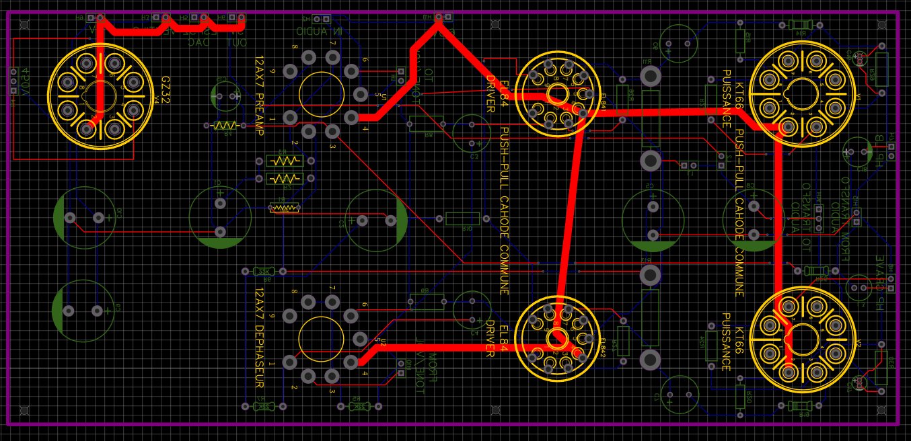
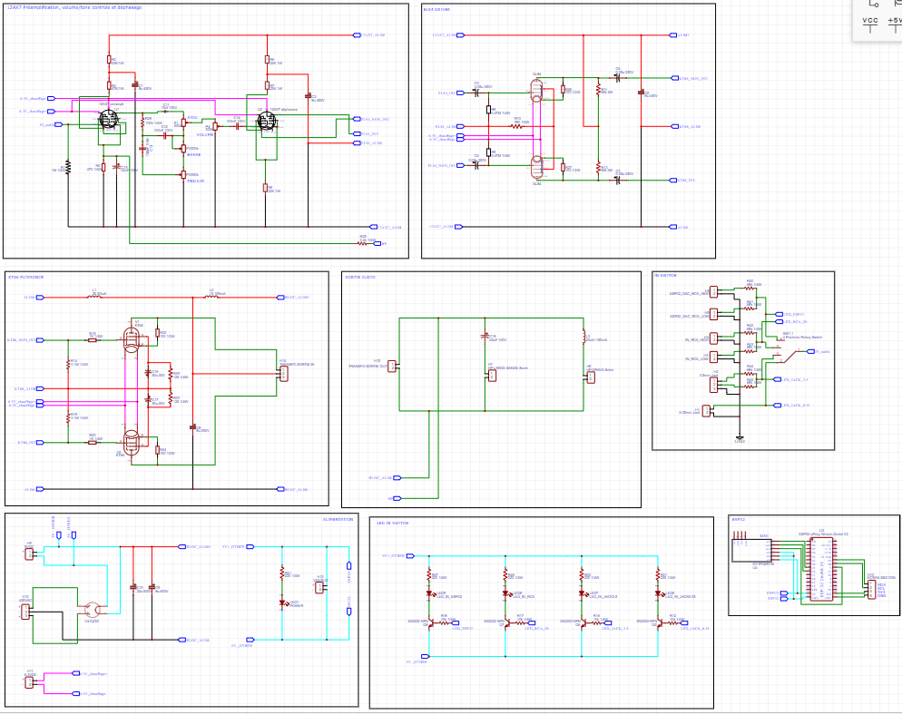

Amplificateur audio lampes
← RetourDescription :
Création d’un amplificateur audio à lampe, utilisant un étage préamplificateur, un contrôle de tonalité, un étage driver et un étage de puissance.
Plusieurs entrées sont sélectionnables avec un switch et des leds pour indiquer la sélection.
Etapes :
- Réutilisation du système bluetooth du projet « Enceinte connectée » pour l’envoie de données en Bluetooth
- Choix des entrées : Bluetooth, jack 3.5mm, jack 6.35mm et RCA
- Documentation sur le choix des composants, les montages existants, comment connecter les différents types de lampes
- Solution retenue : étage de pré amplification avec une lampe 12AX7 -> un contrôle de tonalité -> un deuxième étage de pré amplification 12AX7 qui fait le déphasage -> un étage driver composé de 2 lampes EL84 en montage push-pull à cathode commune -> l’étage de puissance composé de 2 lampes KT66 en montage push-pull à cathode commune -> un transformateur audio de sortie.
- Ajout de système de filtrage : résistance de charges, capacités de liaison et mise à la terre.
- L’alimentation utilise 3 transformateurs : 230VAC – 450VAC pour les lampes, 230VAC – 6.3VDC pour les filaments des lampes et 230VAC – 5VDC pour les leds et l’ESP32 (l’utilisation d’un pont de diode supprimée car à été trouvé un transfo 230VAC – 5VDC). Les 450VAC sont redressés en utilisant une lampe GZ32.
- Le système de sortie utilisera 2 haut-parleurs : un large bande et un grave
- Dessin du schéma électronique sur Easyeda et réalisation des cartes électroniques (carte avec les lampes et carte d’alimentation)
- Réalisation du BOM
- Prochaines étapes : impression des cartes, achat de tous les composants, soudures au fer et à l’air chaud, test des différentes parties avec des outils de mesures.
Environnement technique :
ESP32, Bluetooth, I2C, DAC, C++, analogique, puissance, lampes d’amplification, outils de mesure



